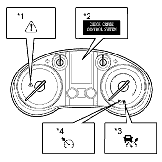

DYNAMIC RADAR CRUISE CONTROL SYSTEM > DIAGNOSIS SYSTEM |
| DIAGNOSIS FUNCTION |
|  |
The diagnosis function makes the master warning light and multi-information display turn on and the cruise control indicator light blinks as shown in the illustration. When a malfunction occurs in the dynamic radar cruise control system, DTCs are stored in the ECM.
| *1 | Master Warning Light |
| *2 | Multi-information Display |
| *3 | Cruise Control Indicator Light (Vehicle-to-vehicle Distance Control Mode) |
| *4 | Cruise Control Indicator Light (Constant Speed Control Mode) |
| *1 | Cruise Control Indicator Light |
| *a | 1.5 seconds |
| *b | 0.5 seconds |
| CHECK INDICATOR |
Turn the engine switch on (IG).
Check that the cruise control indicator light and RADAR READY indicator turn on when the cruise control switch is pushed on and that the indicator light turns off when the cruise control switch is pushed off.